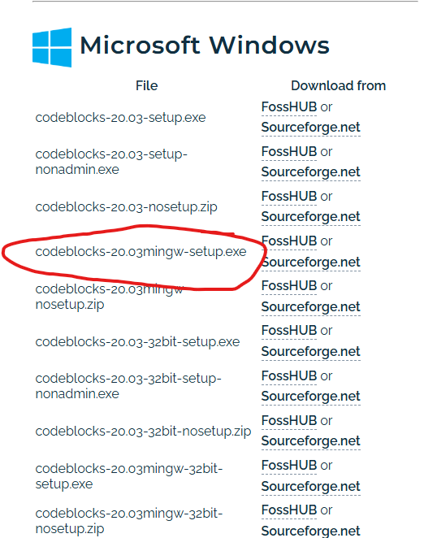

Descarga el instalador que incluye MinGW (generalmente llamado codeblocks-XX.XXmingw-setup.exe, donde XX.XX es la versión).

Versiones existentes de Code-Blocks
Instalar Code::Blocks:
📥 Ejecuta el archivo descargado.
🛠️ Sigue el asistente de instalación:
✅ Acepta los términos de la licencia.
📂 Elige la ubicación de instalación (puedes dejar la predeterminada).
💻 Asegúrate de seleccionar la opción que incluye MinGW durante la instalación.
🚀 Completa el proceso de instalación.
Configuración del Entorno de Desarrollo:
Abrir Code::Blocks
Inicia Code::Blocks desde el menú de inicio o el acceso directo en el escritorio.
Haz clic en Archivo > Nuevo > Proyecto.
Selecciona Aplicación de consola y haz clic en Siguiente.
Elige un nombre para tu proyecto y selecciona la ubicación donde se guardará. Haz clic en Siguiente.
Selecciona el compilador (normalmente GCC) y haz clic en Finalizar.
Escribir y Ejecutar Código:
En el explorador de proyectos (normalmente a la izquierda), haz doble clic en el archivo main.cpp para abrirlo.
Escribe tu código C++ en el editor.
Para compilar y ejecutar el programa, puedes usar el botón Compilar y ejecutar (icono de engranaje seguido de un icono de reproducción) en la barra de herramientas o presionar F9.